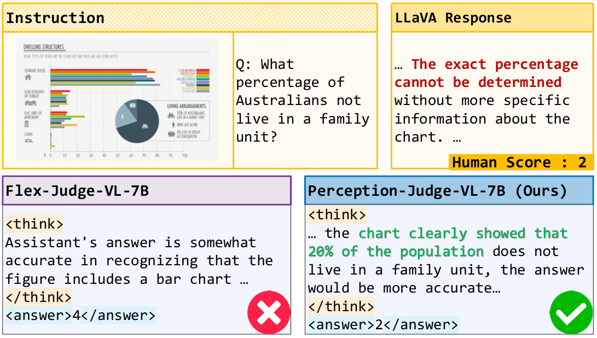
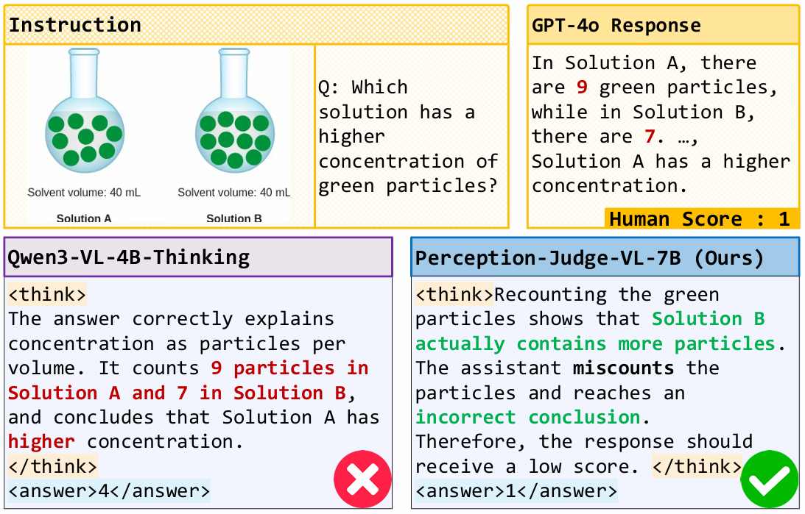

Flex-Judge-VL-7B vs. Perception-Judge-Flex-7B

Recent multimodal large language models have demonstrated strong reasoning ability, yet their reliability as automated evaluators remains limited by a critical weakness: when visual evidence conflicts with textual cues, MLLM judges tend to reward plausible narratives over perceptually correct answers.
We identify and systematically analyze this phenomenon, which we term Perceptual Judgment Bias. Through controlled visual perturbations, existing multimodal judges frequently anchor on the response text instead of their own visual perception, leading to inconsistent and non-verifiable evaluations.
To address this issue, we introduce the Perceptually Perturbed Judgment Dataset, which constructs minimally edited counterfactual responses that isolate perceptual errors and enable verifiable supervision. Building on this dataset, we develop a unified training framework that optimizes a verifiable batch-ranking reward with GRPO, achieving coherent global ordering without explicit pairwise labels.
Experiments across diverse MLLM-as-a-Judge benchmarks show that our approach substantially improves perceptual fidelity, ranking coherence, and alignment with human evaluation. Our method establishes a principled and scalable paradigm for training multimodal judges that are perceptually grounded, interpretable, and robust to visual–reasoning conflicts.


@article{park2021nerfies,
author = {Park, Keunhong and Sinha, Utkarsh and Barron, Jonathan T. and Bouaziz, Sofien and Goldman, Dan B and Seitz, Steven M. and Martin-Brualla, Ricardo},
title = {Nerfies: Deformable Neural Radiance Fields},
journal = {ICCV},
year = {2021},
}